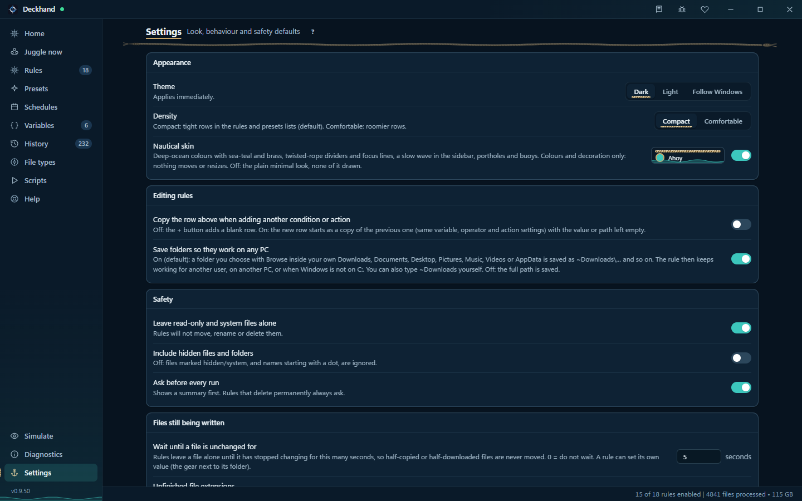
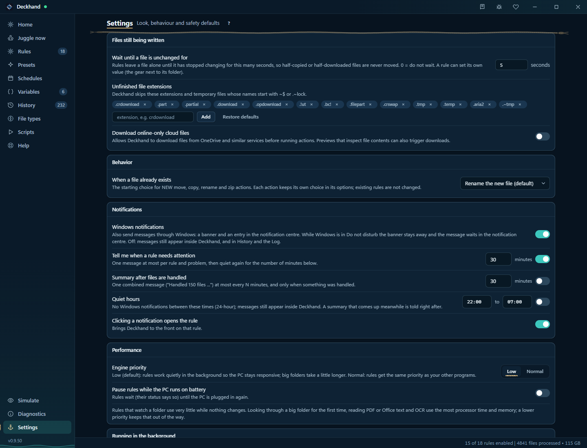
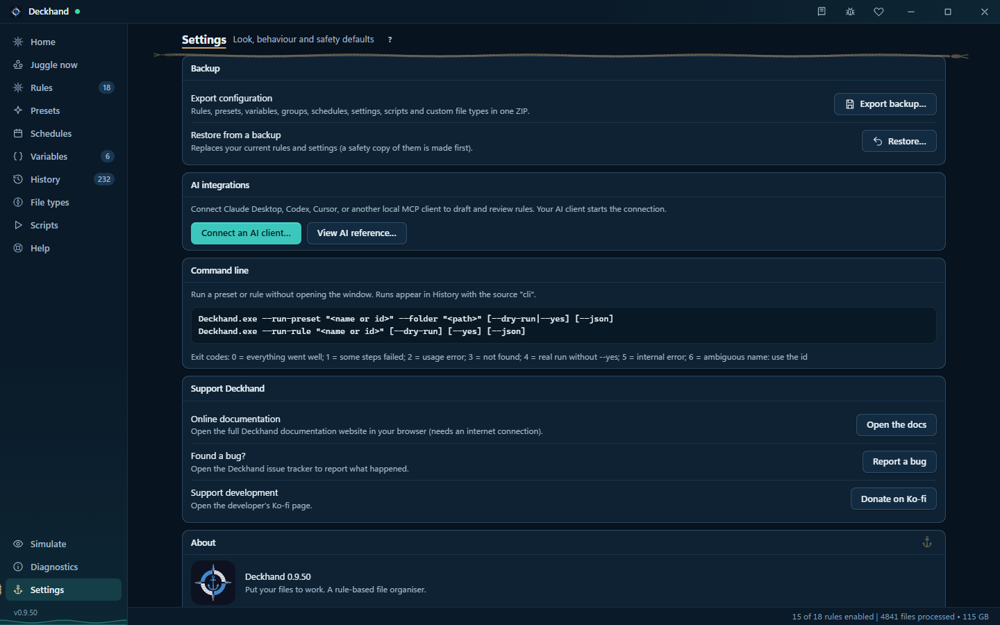

Settings
What each card on the Settings page controls, and where the OCR language, backup, command line and documentation links are.
Settings holds defaults that apply to every rule. A setting that belongs to one rule, such as how a File contents condition reads pictures, lives in that rule instead. Changes are saved as you make them.
Look and editing
The first screenshot shows the top of the page. Appearance has the theme (Dark, Light or Follow Windows), the density of lists (Compact or Comfortable) and the Nautical skin. Editing rules has two switches: whether the + button copies the row above, and whether folders you choose are saved as portable paths such as ~Downloads so the rule works on any PC. Safety has three switches: leave read-only and system files alone, include hidden files and folders, and ask before every run.


Waiting, defaults and notifications
The next screenshot continues down the page.
- Files still being written sets how long a file must stay unchanged before a rule touches it (5 seconds in the screenshot), the unfinished file extensions Deckhand skips, and whether online-only cloud files may be downloaded. See Rules, folders and watching.
- Behavior sets the starting choice of When a file already exists for new move, copy, rename and zip actions. Existing rules are not changed. See Actions and conflicts.
- Notifications controls Windows notifications, how often Deckhand tells you that a rule needs attention, the optional summary after files are handled, quiet hours, and whether clicking a notification opens the rule.
- Performance is the card at the bottom of the screenshot.


Performance and running in the background
Engine priority is Low by default, so rules work quietly in the background. Normal gives rules the same priority as your programs. Pause rules while the PC runs on battery makes rules wait until the PC is plugged in. Running in the background has Start with Windows, Allow multiple Deckhand instances and what happens when you close the window while rules are running. See Diagnostics.

Text in pictures and scans (OCR)
This card has only two settings:
- Language: the OCR language. Empty means the languages of your Windows profile. The list shows the OCR languages installed in Windows.
- OCR cache: Clear OCR cache forgets the text Deckhand already read from pictures and scans.
There is no switch here that turns OCR on or off. Whether a condition reads pictures and scanned PDFs is chosen in the gear of that File contents condition or variable. See File contents. If no OCR language is installed in Windows, the card says so, and the condition's gear explains that OCR is not available. See Troubleshooting.

Backup, AI integrations, command line and support
Backup exports your rules, presets, variables, groups, schedules, settings, scripts and custom file types as one ZIP, and restores from such a ZIP (a safety copy of the current state is made first). AI integrations opens the setup for an AI client and the AI reference, see Connect an AI client (MCP). Command line shows the options and exit codes of your version, see Command line. Support Deckhand has Open the docs, which opens this documentation in your browser, Report a bug and Donate on Ko-fi.


Also in the settings
History and log sets how long history is kept and whether a detailed log is written. Your data shows where the library is kept. Windows Explorer menu adds an optional right-click entry for folders and needs no administrator rights.
Opening this documentation from the app
The online documentation is one click away from three places: the book button in the title bar (the first of the three buttons left of the window buttons), Open the docs under Support Deckhand in Settings, and Online docs at the top of the Help page. All three open this site in your browser and need an internet connection. The Help page itself has short answers and works without a network.
The title bar of Deckhand, with the Online documentation button first of the three buttons before minimise, maximise and close:

The Help page, with its search box and the three buttons at the top: